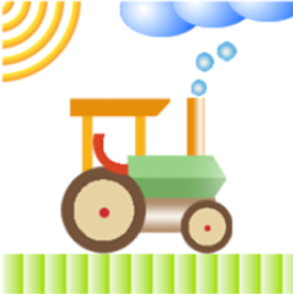

Лабораторная № 2. Рисунок на CSS
Задание: повторить рисунок с помощью CSS. Размер — 200 × 200 px.

Как сделано
Детали размещены через
position: absolute
внутри блока 200 × 200 px. Колёса — круги с рамкой, корпус и кабина —
прямоугольники. Солнце и поле сделаны повторяющимися градиентами. У
каждого кольца солнца внутренняя сторона светлее внешней.
Стили рисунка: pic.css .